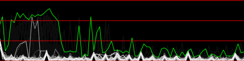
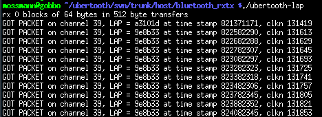
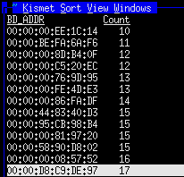

Getting Started¶
There are three major components of Project Ubertooth:
- hardware: The hardware design of Ubertooth One is quite stable. You can build one or buy one.
- firmware: This is software that executes on the ARM processor on the Ubertooth One itself. This page assumes that you have the USB bootloader plus bluetooth_rxtx firmware installed on your board (which is typically what is installed at the time of assembly). The bluetooth_rxtx firmware is moderately stable but is likely to be enhanced as time goes on.
- host code: This is software running on a general purpose computer connected to the Ubertooth One via USB. The sample host code for Project Ubertooth is in active development and will likely change a great deal in the coming months. If you have not yet built the host code, please follow the build guide.
Ubertooth One is a development platform. The true power of the device is best realized when you start writing your own software and adapting it to your needs. If you are just getting to know the board, however, it can be helpful to try out open source code that others have made available. This guide will help you get started with your Ubertooth One by introducing you to some useful host code from the Ubertooth software repository.
Spectrum Analysis¶

The first thing you should try with a new Ubertooth One is real-time spectrum analysis. Take a look at Jared’s demonstration video for a preview.
Connect an antenna to your Ubertooth One and plug it into your computer. Never operate your Ubertooth One without an antenna connected. You should see the RST and 1V8 LEDs illuminate. This indicates that the LPC175x microcontroller is running (RST) and that power is being supplied to the CC2400 wireless transceiver IC (1V8). The USB LED may also light up if your computer’s operating system has enumerated and configured the device (typical on Linux). Now you need some host code to tell the Ubertooth One what to do.
Download the latest Project Ubertooth file release or check out current development code from the git repository and navigate to the host/python/specan_ui directory. Take a look at the README file and make sure that you have installed the prerequisite software. Then execute ubertooth-specan-ui as described in the README and watch the 2.4 GHz activity detected by the Ubertooth One.
One possible thing that could go wrong at this point is that your operating system does not grant you permission to communicate with the USB device. Depending on your distribution and preference, this can be fixed on Linux either by adding your user account to the usb group or by creating a new udev rule such as:
$ echo 'ACTION=="add" BUS=="usb" SYSFS{idVendor}=="1d50" SYSFS{idProduct}=="6002" GROUP:="plugdev" MODE:="0660"' > /etc/udev/rules.d/99-ubertooth.rules
A udev rules file is available in the host/build/misc/udev/. Copy it to /etc/udev/rules.d/ and run the following as root:
# udevadm control --reload-rules
Make sure you are a member of the plugdev group or change the rule to refer to the group of your choice. After adding the udev rule, unplug the Ubertooth One, reboot or restart udevd, and plug in the Ubertooth One again.
During operation of ubertooth-specan-ui the RX LED should illuminate, and the USR LED should be dimly lit. After you finish trying out ubertooth-specan-ui reset your Ubertooth One by unplugging it and plugging it back in.
LAP Sniffing¶

Bluetooth packets start with a code that is based on the Lower Address Part (LAP) of a particular Bluetooth Device Address (BD_ADDR). The BD_ADDR is a 48 bit MAC address, just like the MAC address of an Ethernet device. The LAP consists of the lower 24 bits of the BD_ADDR and is the only part of the address that is transmitted with every packet.
The most important passive Bluetooth monitoring function is simply capturing the LAP from each packet transmitted on a channel. LAP sniffing allows you to identify Bluetooth devices operating in your vicinity.
In order to sniff LAPs, you’ll have to compile the tools in host/ubertooth-tools. These are command line programs intended to work with the bluetooth_rxtx firmware installed on your Ubertooth One. Follow the instructions in the README file in that directory to install the the prerequisite libbtbb, a library for Bluetooth baseband functions. You can install libbtbb from a file release rather than git if you prefer.
Once libbtbb is installed, just type:
mkdir build cd build/ cmake .. make
in the host directory to compile the tools there. Then make sure your Ubertooth One is plugged in and execute:
$ ubertooth-rx
You should see various random LAPs detected. Due to uncertainties in identifying Bluetooth packets without prior knowledge of an address, it is normal for this process to identify false positives. error correction should mitigate this problem, but a small number of false positives may still be seen. When you see the same LAP detected more than once, that is very likely an actual Bluetooth transmission.
Generate some Bluetooth traffic and enjoy the show. I like to use a mobile phone or other Bluetooth device to perform an inquiry (usually called “find new Bluetooth devices” or something similar) to make sure that everything is working properly. An inquiry should produce lots of packets with the LAP 0x9e8b33.
Once you have seen a LAP multiple times, you can be confident that it is a genuine Bluetooth piconet. To find the next byte of the address, the UAP, we can use:
$ ubertooth-rx -l [LAP]
In this mode ubertooth-rx only detects packets from the given piconet and uses them to determine the next byte of the address and some of the internal clock value.
For more information on this process, and the challenges involved in monitoring Bluetooth connections, please read this blog post.
Kismet¶

More advanced Bluetooth sniffing has been implemented in the form of a plugin for Kismet, the venerable 802.11 monitoring tool. In order to compile the Kismet-Ubertooth plugin, you will need a Kismet source tree matching the installed version. The easiest way to make this work is to uninstall any binary Kismet installation you may have installed and then download the Kismet source and follow the instructions to compile and install from the fresh source code. Once Kismet is installed, follow the instructions in host/kismet/plugin-ubertooth/README to install and use the plugin.
Notice that Kismet-Ubertooth identifies not only the LAP but also the 8 bit Upper Address Part (UAP) of detected devices as it is able. This is done by analyzing the timing and other characteristics of multiple packets over time. Another advantage of Kismet is that it dumps complete decoded packets to a pcapbtbb file that can be read with a Wireshark plugin that is distributed with libbtbb. Full packet decoding is only possible when the packet’s UAP has been determined.
Where to Go from Here¶
I hope you have found this guide helpful in getting to know your Ubertooth One. The host code for Project Ubertooth is in active development and new features are being worked on all the time. If you are interested in contributing to the project, or if you need help or would just like to chat about Project Ubertooth, join the ubertooth-general mailing list. Happy hacking!